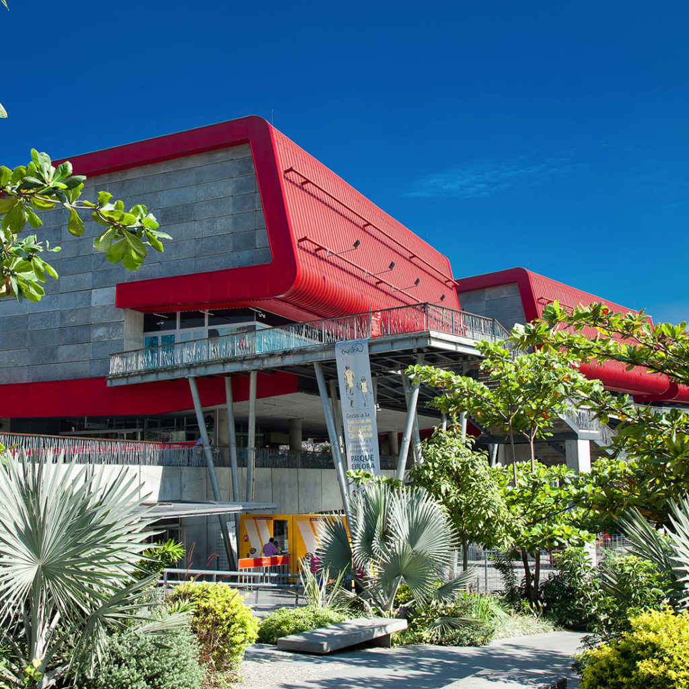
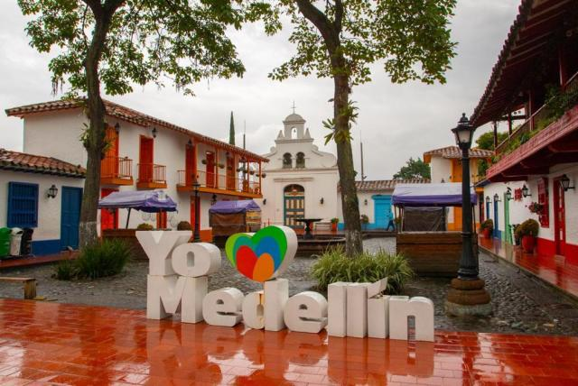

Comuna 13
Conocerás gran parte de la historia de este lugar
que habla de cosas que sucedieron en décadas anteriores, la
comuna 13 fue catalogada la comuna más peligrosa de todas, pero ahora
es un lugar lleno de vida, arte y cultura. Ven y disfruta con nosotros esta experiencia.
Recuerda que los cupos se agotan muy rápido entonces realiza la
reserva ahora mismo.
Parque Explora

El Parque Explora, es un museo interactivo de ciencias en la ciudad de
Medellín, Colombia, formado por un acuario con énfasis en la Amazonia,
un planetario, un taller público de experimentación -Exploratorio- y
un parque con más de 300 experiencias orientadas a la apropiación
social del conocimiento.
Cerro Nutibara

El Cerro Nutibara es una pequeña formación montañosa, uno de
los pocos ecosistemas que se conservan en la localidad. En la parte más
alta del Cerro Nutibara, encontrarás el Pueblito Paisa, un lugar donde
la tradición, idiosincrasia y color del ciudadano paisa se hace
homenaje en una representación típica de los pueblos tradicionales
antioqueños.